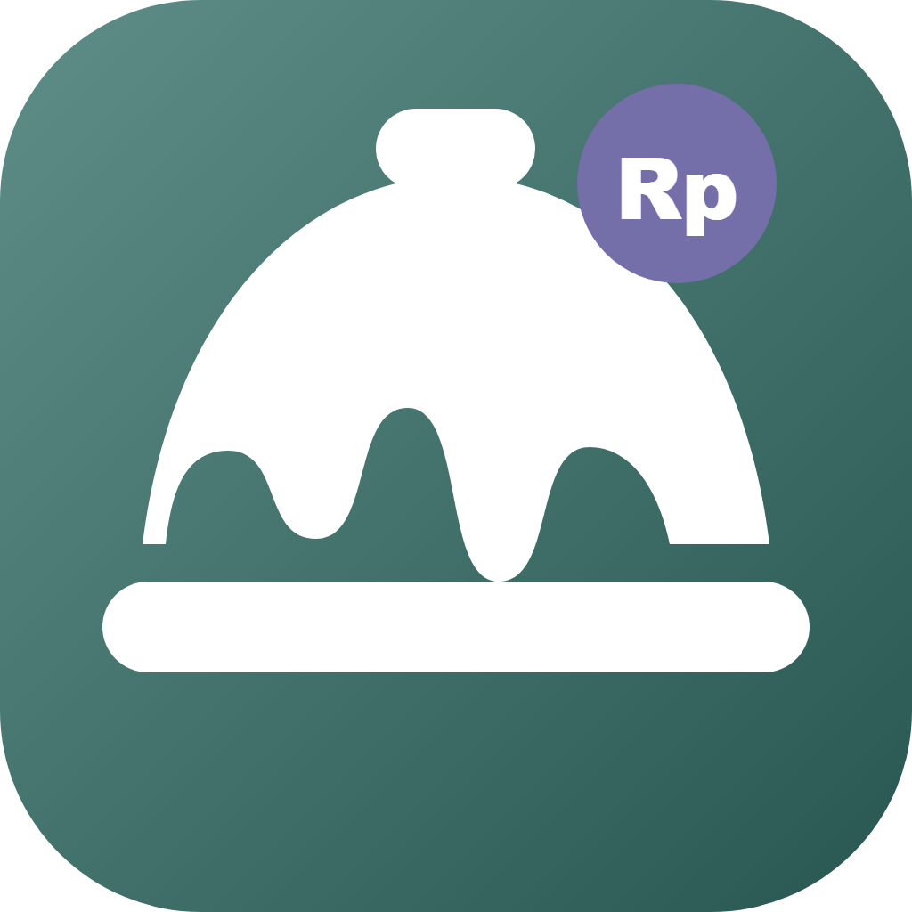

Kasir cepat
Tambah item, pilih meja atau takeaway, hitung pajak, dan selesaikan pembayaran dalam satu alur.

SajiaPOS F&B offline-first
Sajia membantu restoran, kafe, dan outlet F&B mengelola kasir, menu, meja, struk, dan laporan tanpa harus bergantung pada internet stabil.
Android APK. Aktifkan izin install dari browser/file manager jika diminta.
Fitur utama
Tambah item, pilih meja atau takeaway, hitung pajak, dan selesaikan pembayaran dalam satu alur.
Produk dan kategori tidak dibatasi, cocok untuk outlet dengan banyak menu, ukuran, atau seasonal item.
Cetak nota dari printer thermal untuk workflow kasir yang terasa lengkap sejak paket Free.
Lihat ringkasan penjualan, histori transaksi, dan simpan backup lokal saat operasional berjalan.
Paket
Free
Pro
Cloud
Download
APK ini siap untuk test flow onboarding Free, transaksi kasir, printer, dan status Paket Sajia.